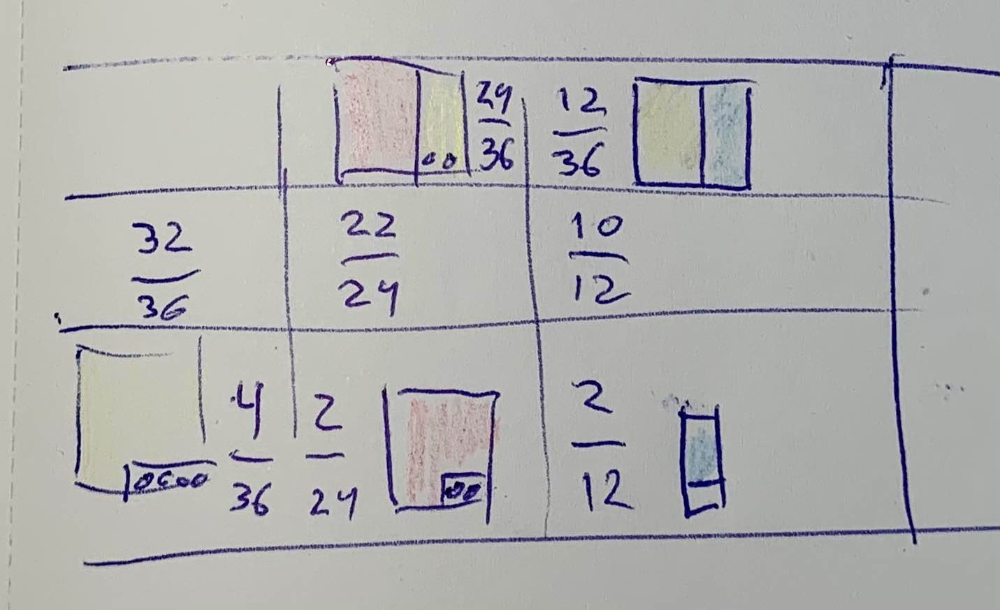
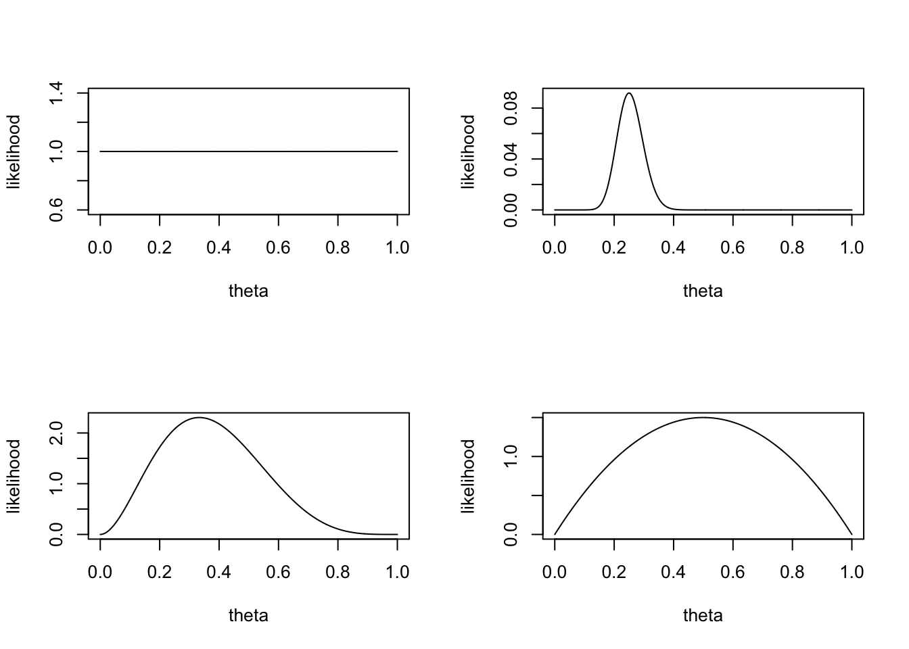
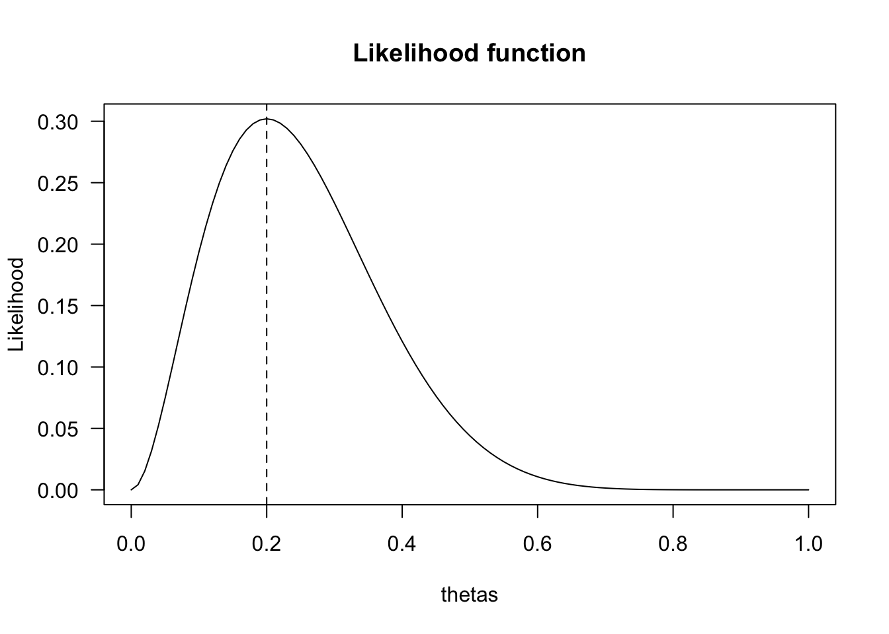
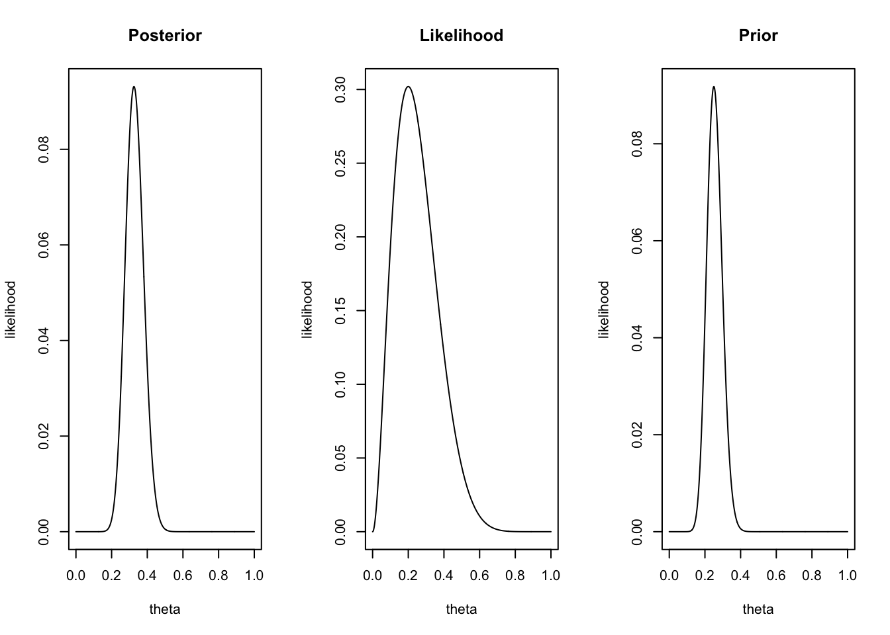
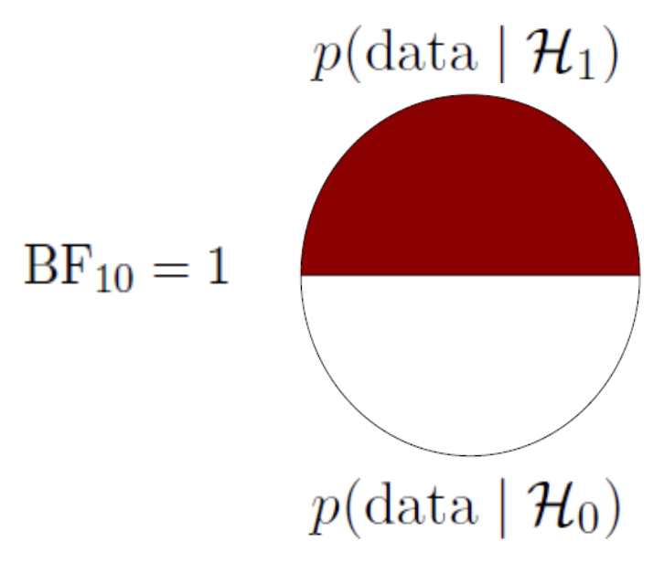
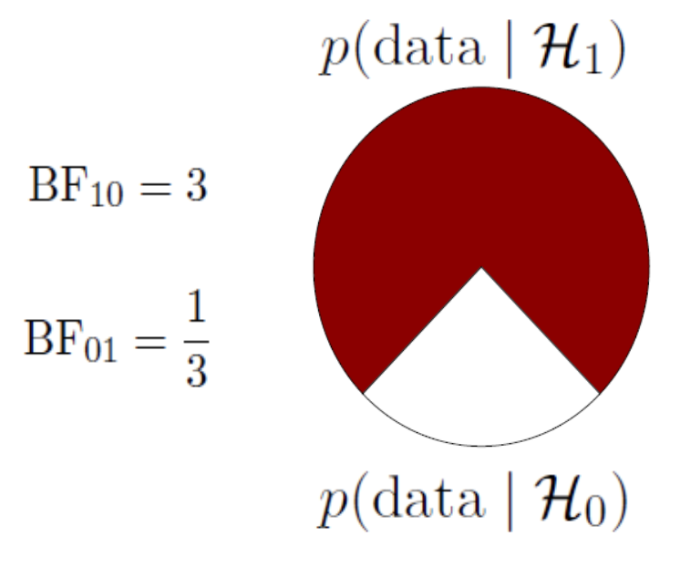
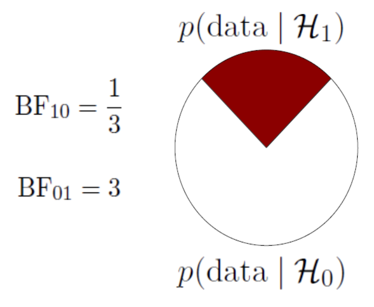

Bayes
Parameter estimation & hypothesis testing
Bayes Theorem
Bayes rule
\[\large P(A\mid B) = \frac{P(B \mid A) P(A)}{P(B)}\]
NHST Table
| \(H_0\) = True | \(H_0\) = False | |
|
Decide to reject \(H_0\) |
Type I error Alpha \(\alpha\) |
Correct True positive = Power |
|
Decide not to reject \(H_0\) |
Correct True negative |
Type II error Beta \(\beta\) |
Bayes decision table
\(P(A \mid B) = \frac{P(B \mid A) P(A)}{P(B)}\)
| \(P(A)\) | \(P(\neg A)\) | |
| \(\begin{equation} \begin{aligned} P(\neg B) = & P(\neg B \mid A) P(A) + \\ & P(\neg B \mid \neg A) P(\neg A) \end{aligned} \end{equation}\) | \(P(\neg B \mid A)\) | \(P(\neg B \mid \neg A)\) |
| \(\begin{equation} \begin{aligned} P(B) = & P(B \mid A) P(A) + \\ & P(B \mid \neg A) P(\neg A) \end{aligned} \end{equation}\) | \(P(B \mid A)\) | \(P(B \mid \neg A)\) |
Visual
| \(P(A)\) | \(P(\neg A)\) | |
| \(\begin{equation} \begin{aligned} P(\neg B) = & P(\neg B \mid A) P(A) + \\ & P(\neg B \mid \neg A) P(\neg A) \end{aligned} \end{equation}\) | \(P(\neg B \mid A)\) | \(P(\neg B \mid \neg A)\) |
| \(\begin{equation} \begin{aligned} P(B) = & P(B \mid A) P(A) + \\ & P(B \mid \neg A) P(\neg A) \end{aligned} \end{equation}\) | \(P(B \mid A)\) | \(P(B \mid \neg A)\) |
Hypothesis | Data
\[\large P(H \mid D) = \frac{P(D \mid H) \times P(H)}{P(D)}\]
With legos

Posterior Likelihood Prior
\[P(H \mid D) = \frac{P(D \mid H) \times P(H)}{P(D)} = P(H) \times \frac{P(D \mid H)}{P(D)}\]
- \(P(H)\), the \(prior\), is the initial degree of belief in \(H\).
- \(P(H \mid D)\), the \(posterior\), is the degree of belief after incorporating news that \(D\) is true.
- the quotient \(\frac{P(D \mid H)}{P(D)}\) represents the support \(D\) provides for \(H\).
Posterior \(\propto\) Likelihood \(\times\) Prior
Bayes is about
Posterior \(\propto\) Likelihood \(\times\) Prior
- Quantified belief
- Common sense expressed in numbers
- Updating belief in light of new evidence
- Yesterdays posteriors are todays priors
Generative model
Frequentists
State of the world → Data
Bayesions
Data → State of the world
Resources
Bayesian parameter estimation
Updating belief
Posterior \(\propto\) Likelihood \(\times\) Prior
So what is your belief
In lecture one I tossed ten times. with a coin that was supposedly healed after hamering it flat.
I arbitrarily assumed my \(H_A: \theta=.25\).
Considering all possible values of \(\theta\), what is your belief?
\([0,1] \Rightarrow \{\theta\in\Bbb R:0\le \theta\le 1\}\)
Draw your belief
Prior distribution
You have assigned a prior probability distribution to the parameter \(\theta\).
This is your prior
Now we normally do not draw our priors, but we could.
Priors
We can choose a flat prior, or a beta distributed prior with different parameter values \(a\) and \(b\).
theta = seq(0,1, .001)
layout(matrix(1:4,2,2))
plot(theta, dunif(theta), type="l", ylab = "likelihood")
plot(theta, dbeta(theta, 3, 5), type="l", ylab = "likelihood")
plot(theta, dbinom(25, 100, theta), type="l", ylab = "likelihood")
plot(theta, dbeta(theta, 2, 2), type="l", ylab = "likelihood")
Choose prior
Binomial distribution
\(\theta^k (1-\theta)^{n-k} \\ \theta^{25} (1-\theta)^{100-25}\)
Now what is the data saying
My ten tosses
\(\begin{aligned} k &= 2 \\ n &= 10 \end{aligned}\)
k = 2
n = 10Likelihood
What is the most likely parameter value \(\theta\) assuming the data to be true:
\(\theta = \frac{2}{10} = 0.2\)
theta.given.data = k/n
theta.given.data[1] 0.2Likelihood function
How likely is 2 out of 10 for all possible \(\theta\) values?
\(\theta^k (1-\theta)^{n-k}\)
thetas = seq(0, 1, .01)
likelihood = dbinom(k, n, thetas)
plot(thetas, dbinom(k, n, thetas),
main = "Likelihood function",
type='l',
ylab = "Likelihood",
las = 1)
abline(v=theta.given.data, lty='dashed')

Posterior
Now we can update our belief about the possible values of theta based on the data (the likelihood function) we found. For this we use Bayes rule.
\(\begin{aligned} {Posterior} &\propto {Likelihood} \times {Prior} \\ \theta^{27}(1-\theta)^{83} &= \theta^{2} (1-\theta)^{10-2} \times \theta^{25} (1-\theta)^{100-25} \end{aligned}\)
Visual

Theta all mighty
The true value of \(theta\) for our binomial distribution.
\(\Huge \theta = .68\)
The data driver!
See the prior update
set.seed(25)
## Run multiple samples with our real theta of .68 as our driving force.
real.theta = .68
old.k = 27
old.n = 83
for(i in 1:20) {
# Choose a random sample size between 10 and 100
sample.size.n = sample(30:100, 1)
# Sample number of heads based on sample size and fixed real parameter value
number.of.heads.k = rbinom(1, sample.size.n, real.theta)
# sample.size.n
# number.of.heads.k
new.k = old.k + number.of.heads.k
new.n = old.n + sample.size.n
layout(matrix(1:3,1,3))
plot(theta, dbinom(new.k, new.n, theta), type="l", ylab = "likelihood", main = "Posterior")
plot(theta, dbinom(number.of.heads.k, sample.size.n, theta), type="l", ylab = "likelihood", main = "Likelihood")
plot(theta, dbinom(old.k, old.n, theta), type="l", ylab = "likelihood", main = "Prior")
old.k = new.k
old.n = new.n
}
Take home message
- Bayesians quantify uncertainty through distributions.
- The more peaked the distribution, the lower the uncertainty.
- Incoming information continually updates our knowledge; today’s posterior is tomorrow’s prior.
Bayesian hypothesis testing
Bayesion Hypothesis
- \(H_0\), the null hypothesis. This is an invariance or “general law”. For instance \(\theta = 1\) (all swans are white) or \(\theta = .5\) (people cannot look into the future – performance is at chance).
- \(H_A\) is the hypothesis that relaxes the restriction imposed by \(H_0\).
Prior Belief
\[\large \underbrace{\frac{P(H_A \mid data)}{P(H_0 \mid data)}}_\textrm{Posterior belief} = \underbrace{\frac{P(H_A)}{P(H_0)}}_\textrm{Prior belief} \times \underbrace{\frac{P(data \mid H_A)}{P(data \mid H_0)}}_\textrm{Bayes Factor}\]
Bayes Factor
\[\underbrace{\frac{P(data \mid H_A)}{P(data \mid H_0)}}_\textrm{Bayes Factor}\]
A ratio of the likelihood of the data under the alternative and the null.
A Bayes factor of \({BF}_{10} = 3\), means that the data are 3 times more likely under the alternative than under the null.
Simple BF explanation
The special case of the Bayes Factor for null hypotheses testing can be visualised as the difference between the likelihood of the data at \(H_A\) / \(H_1\) and \(H_0\) at the parameter value that represents the null.
interactive BF
Heuristics for BF
Heuristics for the Interpretation of the Bayes Factor by Harold Jeffreys
| BF | Evidence |
|---|---|
| 1 – 3 | Anecdotal |
| 3 – 10 | Moderate |
| 10 – 30 | Strong |
| 30 – 100 | Very strong |
| >100 | Extreme |
Advantages of the Bayes Factor
- Provides a continuous degree of evidence without requiring an all-or-none decision.
- Allows evidence to be monitored during data collection.
- Differentiates between “the data support H0” (evidence for absence) and “the data are not informative” (absence of evidence).
BF pizza



JASP

End
Contact